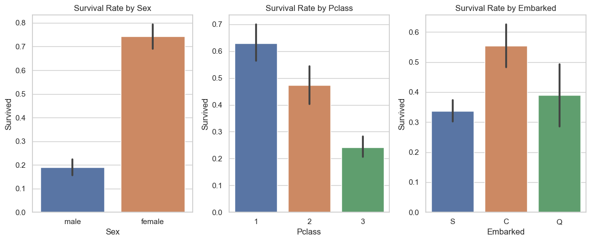
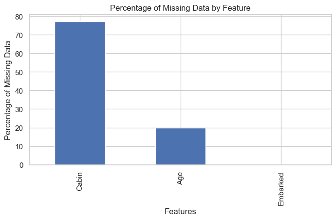

Notebook Setup
In this setup phase, essential modules and functions are imported to facilitate data preprocessing, feature engineering, hyperparameter tuning, model training, and evaluation processes. Additionally, common data manipulation and visualization libraries, such as Pandas, Matplotlib, and Seaborn, are included alongside scikit-learn's machine learning and preprocessing tools. This preparation step ensures that all necessary tools are readily available for conducting a comprehensive analysis and developing machine learning models to predict Titanic survival outcomes.
# Import necessary modules from the package
from titanic_survival_package.data_preprocessing import load_dataset,demonstrate_preprocessing, fill_missing_values, preprocess_data
from titanic_survival_package.feature_engineering import create_family_size_feature, extract_and_process_titles, add_interaction_terms, drop_unnecessary_features
from titanic_survival_package.hyperparameter_tuning import tune_hyperparameters_grid, tune_hyperparameters_random
from titanic_survival_package.models import ModelTrainer, ModelEvaluator, train_stacking_model, generate_submission
import pandas as pd
import matplotlib.pyplot as plt
import seaborn as sns
from sklearn.model_selection import train_test_split
from sklearn.linear_model import LogisticRegression
from sklearn.metrics import accuracy_score, classification_report
from sklearn.ensemble import RandomForestClassifier
from sklearn.preprocessing import StandardScaler
---------------------------------------------------------------------------
ModuleNotFoundError Traceback (most recent call last)
Cell In[1], line 2
1 # Import necessary modules from the package
----> 2 from titanic_survival_package.data_preprocessing import load_dataset,demonstrate_preprocessing, fill_missing_values, preprocess_data
3 from titanic_survival_package.feature_engineering import create_family_size_feature, extract_and_process_titles, add_interaction_terms, drop_unnecessary_features
4 from titanic_survival_package.hyperparameter_tuning import tune_hyperparameters_grid, tune_hyperparameters_random
ModuleNotFoundError: No module named 'titanic_survival_package'
Load and Preprocess the Data
During data loading and preprocessing, an initial analysis reveals insights into feature statistics, missing values, and data diversity. A correlation matrix further explores relationships, especially between numerical features and the 'Survived' target, guiding preprocessing and feature engineering to enhance model accuracy.
A positive correlation between 'Survived' and 'Sex' suggests females had a higher survival rate, while a negative correlation with 'Pclass' highlights lower survival rates among lower-class passengers. Engineered features such as 'FamilySize', 'Title_Master', 'Title_Miss', 'Title_Mr', 'Title_Mrs', and 'Age_Pclass' are incorporated, reflecting detailed aspects of the dataset conducive to model refinement.
# General Analysis of the Training Data
# Basic statistical overview
train_description = train_df.describe(include='all')
# Checking for missing values in the training dataset
missing_values_train = train_df.isnull().sum()
# Checking for unique values in each column to understand the diversity of data
unique_values_train = train_df.nunique()
# Overview of correlation between features, especially with the target variable 'Survived'
correlation_matrix = train_df.corr(numeric_only=True)
train_description, missing_values_train, unique_values_train, correlation_matrix
( PassengerId Survived Pclass Sex Age \
count 891.000000 891.000000 891.000000 891.000000 891.000000
unique NaN NaN NaN NaN NaN
top NaN NaN NaN NaN NaN
freq NaN NaN NaN NaN NaN
mean 446.000000 0.383838 2.308642 0.352413 29.361582
std 257.353842 0.486592 0.836071 0.477990 13.019697
min 1.000000 0.000000 1.000000 0.000000 0.420000
25% 223.500000 0.000000 2.000000 0.000000 22.000000
50% 446.000000 0.000000 3.000000 0.000000 28.000000
75% 668.500000 1.000000 3.000000 1.000000 35.000000
max 891.000000 1.000000 3.000000 1.000000 80.000000
SibSp Parch Fare Embarked FamilySize \
count 891.000000 891.000000 891.000000 891.000000 891.000000
unique NaN NaN NaN NaN NaN
top NaN NaN NaN NaN NaN
freq NaN NaN NaN NaN NaN
mean 0.523008 0.381594 32.204208 0.361392 1.904602
std 1.102743 0.806057 49.693429 0.635673 1.613459
min 0.000000 0.000000 0.000000 0.000000 1.000000
25% 0.000000 0.000000 7.910400 0.000000 1.000000
50% 0.000000 0.000000 14.454200 0.000000 1.000000
75% 1.000000 0.000000 31.000000 1.000000 2.000000
max 8.000000 6.000000 512.329200 2.000000 11.000000
Title_Master Title_Miss Title_Mr Title_Mrs Title_Rare Age_Pclass
count 891 891 891 891 891 891.000000
unique 2 2 2 2 2 NaN
top False False True False False NaN
freq 851 706 517 765 868 NaN
mean NaN NaN NaN NaN NaN 64.089607
std NaN NaN NaN NaN NaN 32.494562
min NaN NaN NaN NaN NaN 0.920000
25% NaN NaN NaN NaN NaN 40.000000
50% NaN NaN NaN NaN NaN 63.000000
75% NaN NaN NaN NaN NaN 84.000000
max NaN NaN NaN NaN NaN 222.000000 ,
PassengerId 0
Survived 0
Pclass 0
Sex 0
Age 0
SibSp 0
Parch 0
Fare 0
Embarked 0
FamilySize 0
Title_Master 0
Title_Miss 0
Title_Mr 0
Title_Mrs 0
Title_Rare 0
Age_Pclass 0
dtype: int64,
PassengerId 891
Survived 2
Pclass 3
Sex 2
Age 88
SibSp 7
Parch 7
Fare 248
Embarked 3
FamilySize 9
Title_Master 2
Title_Miss 2
Title_Mr 2
Title_Mrs 2
Title_Rare 2
Age_Pclass 128
dtype: int64,
PassengerId Survived Pclass Sex Age SibSp \
PassengerId 1.000000 -0.005007 -0.035144 -0.042939 0.034212 -0.057527
Survived -0.005007 1.000000 -0.338481 0.543351 -0.064910 -0.035322
Pclass -0.035144 -0.338481 1.000000 -0.131900 -0.339898 0.083081
Sex -0.042939 0.543351 -0.131900 1.000000 -0.081163 0.114631
Age 0.034212 -0.064910 -0.339898 -0.081163 1.000000 -0.233296
SibSp -0.057527 -0.035322 0.083081 0.114631 -0.233296 1.000000
Parch -0.001652 0.081629 0.018443 0.245489 -0.172482 0.414838
Fare 0.012658 0.257307 -0.549500 0.182333 0.096688 0.159651
Embarked -0.030467 0.106811 0.045702 0.116569 -0.009165 -0.059961
FamilySize -0.040143 0.016639 0.065997 0.200988 -0.245619 0.890712
Title_Master -0.026151 0.085221 0.082081 -0.159934 -0.373960 0.349559
Title_Miss -0.067731 0.335636 -0.010261 0.693916 -0.248559 0.083462
Title_Mr 0.038850 -0.549199 0.142698 -0.867334 0.180808 -0.250489
Title_Mrs 0.010256 0.341994 -0.153758 0.550146 0.167687 0.061668
Title_Rare 0.063948 -0.012054 -0.187174 -0.075638 0.192912 -0.025874
Age_Pclass 0.004083 -0.324559 0.522045 -0.172433 0.562135 -0.188211
Parch Fare Embarked FamilySize Title_Master \
PassengerId -0.001652 0.012658 -0.030467 -0.040143 -0.026151
Survived 0.081629 0.257307 0.106811 0.016639 0.085221
Pclass 0.018443 -0.549500 0.045702 0.065997 0.082081
Sex 0.245489 0.182333 0.116569 0.200988 -0.159934
Age -0.172482 0.096688 -0.009165 -0.245619 -0.373960
SibSp 0.414838 0.159651 -0.059961 0.890712 0.349559
Parch 1.000000 0.216225 -0.078665 0.783111 0.267344
Fare 0.216225 1.000000 0.062142 0.217138 0.010908
Embarked -0.078665 0.062142 1.000000 -0.080281 -0.012419
FamilySize 0.783111 0.217138 -0.080281 1.000000 0.372472
Title_Master 0.267344 0.010908 -0.012419 0.372472 1.000000
Title_Miss 0.100998 0.119518 0.170479 0.107500 -0.110981
Title_Mr -0.333905 -0.183766 -0.113971 -0.338014 -0.254903
Title_Mrs 0.223575 0.107259 -0.038203 0.153842 -0.087987
Title_Rare -0.059535 0.016275 0.018804 -0.047426 -0.035291
Age_Pclass -0.134979 -0.353204 0.018734 -0.196069 -0.298028
Title_Miss Title_Mr Title_Mrs Title_Rare Age_Pclass
PassengerId -0.067731 0.038850 0.010256 0.063948 0.004083
Survived 0.335636 -0.549199 0.341994 -0.012054 -0.324559
Pclass -0.010261 0.142698 -0.153758 -0.187174 0.522045
Sex 0.693916 -0.867334 0.550146 -0.075638 -0.172433
Age -0.248559 0.180808 0.167687 0.192912 0.562135
SibSp 0.083462 -0.250489 0.061668 -0.025874 -0.188211
Parch 0.100998 -0.333905 0.223575 -0.059535 -0.134979
Fare 0.119518 -0.183766 0.107259 0.016275 -0.353204
Embarked 0.170479 -0.113971 -0.038203 0.018804 0.018734
FamilySize 0.107500 -0.338014 0.153842 -0.047426 -0.196069
Title_Master -0.110981 -0.254903 -0.087987 -0.035291 -0.298028
Title_Miss 1.000000 -0.601857 -0.207749 -0.083327 -0.231753
Title_Mr -0.601857 1.000000 -0.477160 -0.191387 0.295167
Title_Mrs -0.207749 -0.477160 1.000000 -0.066063 0.039543
Title_Rare -0.083327 -0.191387 -0.066063 1.000000 -0.023549
Age_Pclass -0.231753 0.295167 0.039543 -0.023549 1.000000 )
In this part, datasets are loaded and preprocessed. Initial loading segregates training and test datasets. An analysis, focusing on 'Sex', 'Pclass', and 'Embarked' features, is conducted on the training data. Subsequently, missing values are addressed, and columns deemed unnecessary are omitted. Finally, preprocessing further engineers and encodes features within the training dataset, preparing it for subsequent analysis and modeling.
# load_dataset, fill_missing_values, preprocess_data
# Load dataset
train_df = load_dataset('train.csv')
test_df = load_dataset('test.csv')
# Detailed Analysis of Categorical Features: 'Sex', 'Pclass', and 'Embarked'
demonstrate_preprocessing(train_df)
# Fill missing values and drop unnecessary columns
train_df = fill_missing_values(train_df)
# Apply preprocessing steps to engineer and encode features
train_df = preprocess_data(train_df)


Feature Engineering
In the feature engineering phase, new attributes like 'FamilySize' are created, titles are extracted from names, unnecessary features are removed, and interaction terms are added to enrich the dataset. The data is then scaled and divided into training and validation sets, preparing it for the modeling stage. This step is vital for enhancing the dataset's complexity and potential predictive power.
# Create 'FamilySize' feature
train_df = create_family_size_feature(train_df)
# Extract and process titles from 'Name'
train_df = extract_and_process_titles(train_df)
# Drop unnecessary features
train_df = drop_unnecessary_features(train_df)
# Add interaction terms
train_df = add_interaction_terms(train_df)
# Prepare the dataset for model training
features = ['Pclass', 'Age', 'SibSp', 'Parch', 'Fare', 'Embarked', 'FamilySize', 'Sex']
X = train_df[features]
y = train_df['Survived']
# Define features after feature engineering steps are applied
features = train_df.columns.drop('Survived')
# Splitting the data into training and validation sets
X_train, X_val, y_train, y_val = train_test_split(train_df[features], train_df['Survived'], test_size=0.2, random_state=42)
# Scaling
scaler = StandardScaler()
X_train_scaled = scaler.fit_transform(X_train)
X_val_scaled = scaler.transform(X_val)
print(train_df.head())
PassengerId Survived Pclass Sex Age SibSp Parch Fare Embarked \
0 1 0 3 0 22.0 1 0 7.2500 0
1 2 1 1 1 38.0 1 0 71.2833 1
2 3 1 3 1 26.0 0 0 7.9250 0
3 4 1 1 1 35.0 1 0 53.1000 0
4 5 0 3 0 35.0 0 0 8.0500 0
FamilySize Title_Master Title_Miss Title_Mr Title_Mrs Title_Rare \
0 2 False False True False False
1 2 False False False True False
2 1 False True False False False
3 2 False False False True False
4 1 False False True False False
Age_Pclass
0 66.0
1 38.0
2 78.0
3 35.0
4 105.0
Hyperparameter Tuning
The hyperparameter tuning process identifies the optimal settings for the RandomForestClassifier model, using a defined set of features that include both original and engineered variables. The tuning results in selecting the best combination of 'max_depth', 'min_samples_split', and 'n_estimators', achieving a promising accuracy score. This step is critical for optimizing model performance by systematically exploring a range of hyperparameter values.
# Define features used for the model based on preprocessing and feature engineering steps
features = ['Pclass', 'Age', 'SibSp', 'Parch', 'Fare', 'Embarked', 'FamilySize', 'Sex', 'Title_Master', 'Title_Miss', 'Title_Mr', 'Title_Mrs', 'Age_Pclass']
X = train_df[features]
y = train_df['Survived']
# Hyperparameters to tune
parameters = {
'n_estimators': [100, 200],
'max_depth': [5, 10],
'min_samples_split': [2, 4]
}
# Tune hyperparameters for RandomForestClassifier
best_params, best_score = tune_hyperparameters_grid(RandomForestClassifier(random_state=42), X, y, parameters)
print(f"Best Parameters: {best_params}")
print(f"Best Score: {best_score}")
Best Parameters: {'max_depth': 10, 'min_samples_split': 2, 'n_estimators': 200}
Best Score: 0.8327914129684263
Model Training and Evaluation
During the model training and evaluation, the RandomForestClassifier is optimized with previously determined best hyperparameters. After scaling the features, the model is trained and evaluated on a validation set, achieving an accuracy of approximately 83.8%. This demonstrates the model's effective predictive capability on the given dataset.
# Continue using the 'best_params' obtained from hyperparameter tuning
best_params = {
'n_estimators': [100], # Example: Number of trees in the forest, already correctly wrapped in a list
'max_depth': [10], # Corrected: Wrapped the single value in a list
'min_samples_split': [2], # Assuming this was also correctly wrapped in a list
'min_samples_leaf': [1] # Assuming this was also correctly wrapped in a list
}
# Training and evaluation setup
X_train, X_val, y_train, y_val = train_test_split(X, y, test_size=0.2, random_state=42)
# Feature scaling
scaler = StandardScaler()
X_train_scaled = scaler.fit_transform(X_train)
X_val_scaled = scaler.transform(X_val)
# Model Training
model_trainer = ModelTrainer(RandomForestClassifier(random_state=42), best_params)
best_model = model_trainer.train(X_train_scaled, y_train)
# Model Evaluation on Validation Set
accuracy = ModelEvaluator.evaluate_model(best_model, X_val_scaled, y_val)
print(f"Validation Set Accuracy: {accuracy}")
Validation Set Accuracy: 0.8379888268156425
The test dataset undergoes the same preprocessing and feature engineering steps as the training dataset to ensure consistency in data structure and features. This preparation enables the application of the trained model to the test data, leading to the generation of survival predictions which are then formatted for submission.
test_df = fill_missing_values(test_df)
test_df = preprocess_data(test_df)
test_df = create_family_size_feature(test_df)
test_df = extract_and_process_titles(test_df)
test_df = drop_unnecessary_features(test_df)
test_df = add_interaction_terms(test_df)
X_test = test_df[features]
# Ensure test_df_processed has the same columns as those used in training the model
if set(features) <= set(X_test.columns):
X_test = test_df[features]
else:
raise ValueError("Test data missing some features used in training")
#X_test_scaled = scaler.transform(X_test)
X_test_scaled = scaler.transform(X_test) #scaler.transform(X_test)
# Making predictions using the final Random Forest model
test_predictions = best_model.predict(X_test_scaled)
# Preparing the submission file format
submission = pd.DataFrame({
'PassengerId': test_df['PassengerId'],
'Survived': test_predictions
})
# Displaying the first few rows of the submission file
submission.head()
| PassengerId | Survived | |
|---|---|---|
| 0 | 892 | 0 |
| 1 | 893 | 0 |
| 2 | 894 | 0 |
| 3 | 895 | 0 |
| 4 | 896 | 1 |
Generate Submission
# Generate submission file
submission_file_path = 'submission.csv'
generate_submission(submission, submission_file_path)
Submission file saved to submission.csv